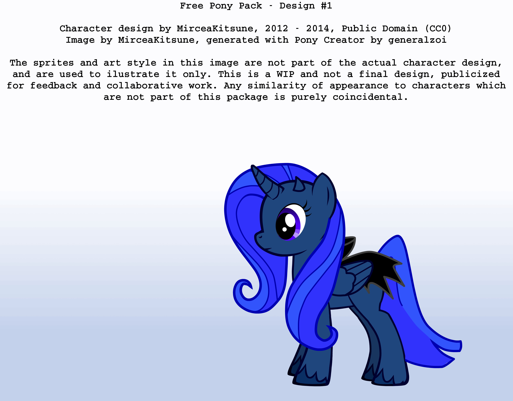
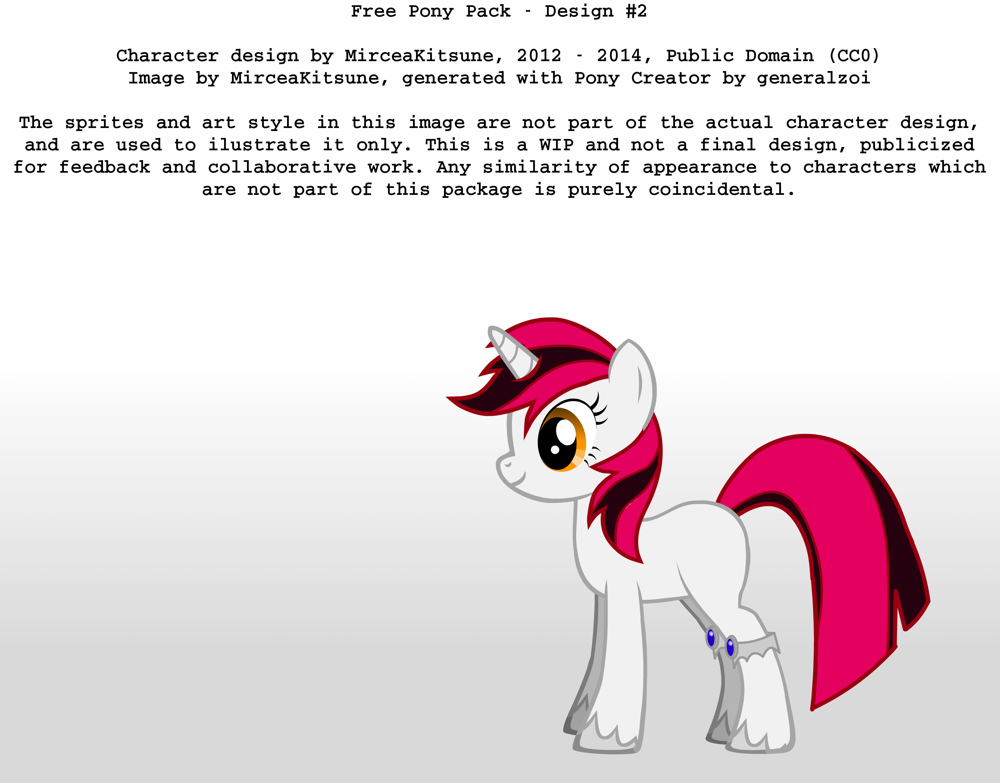
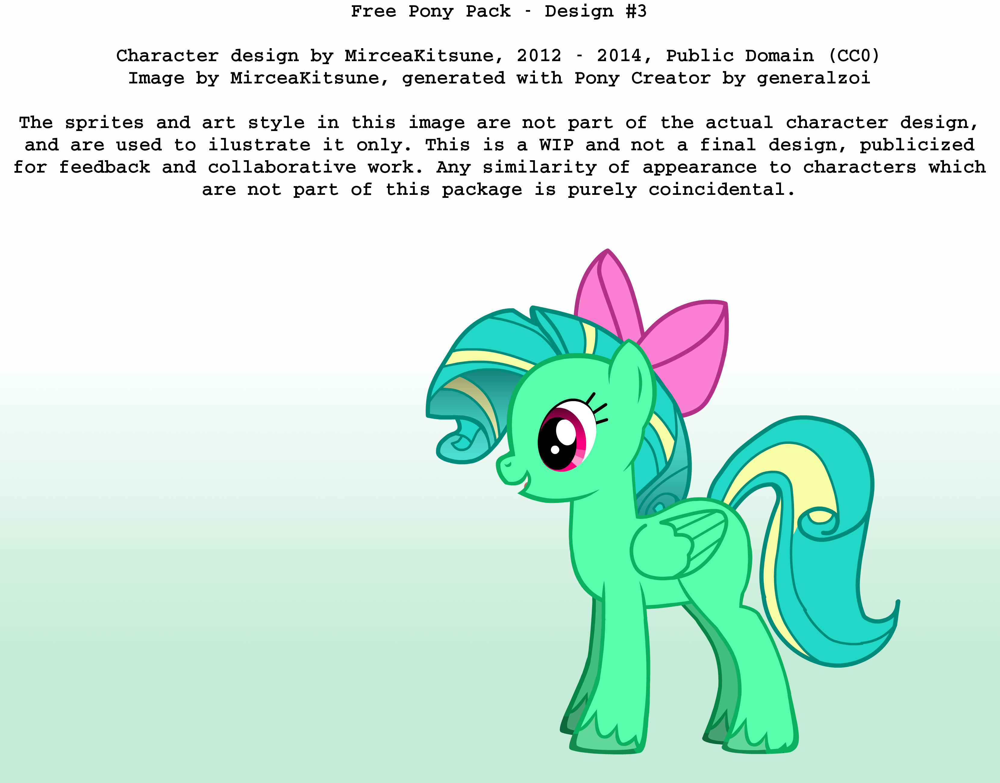
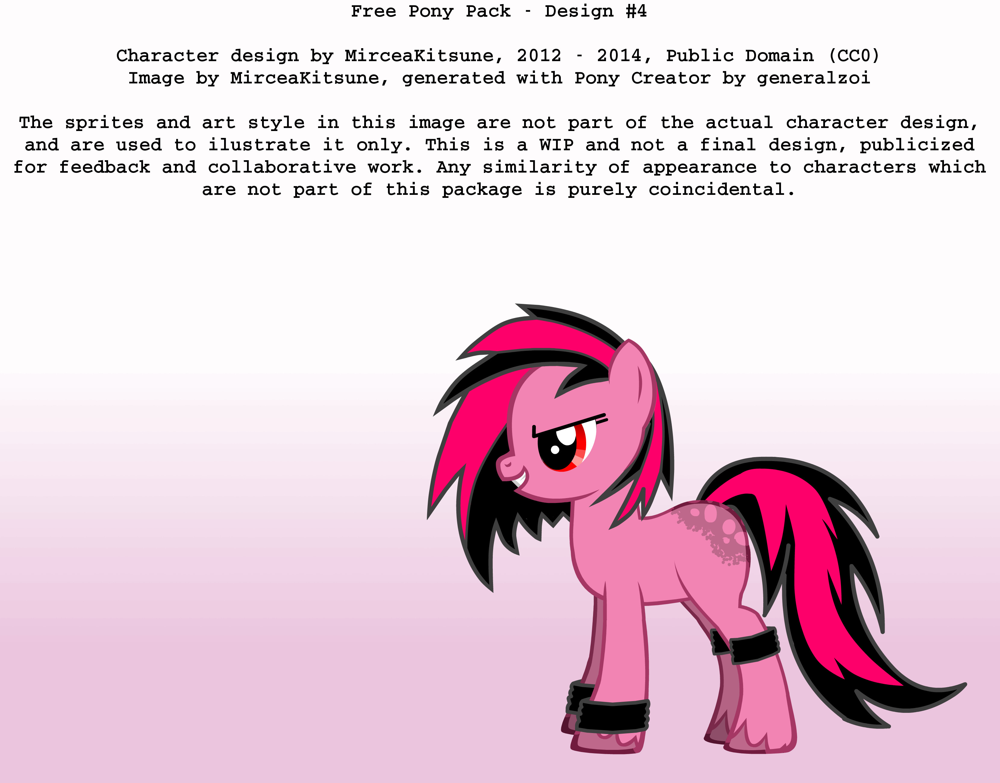
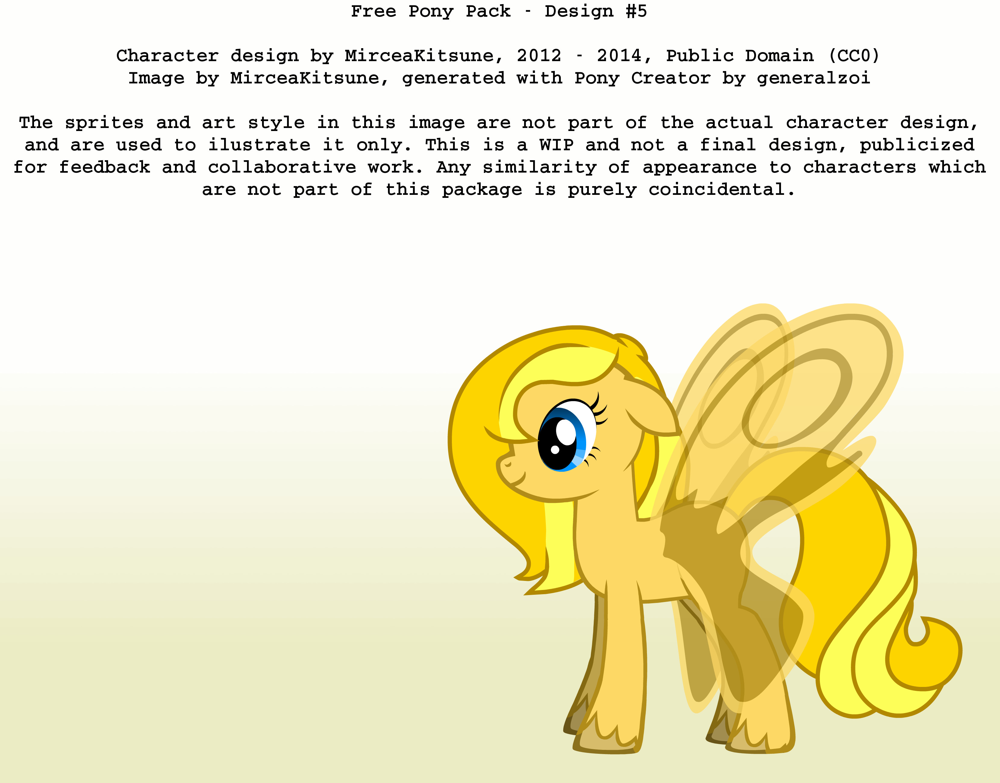
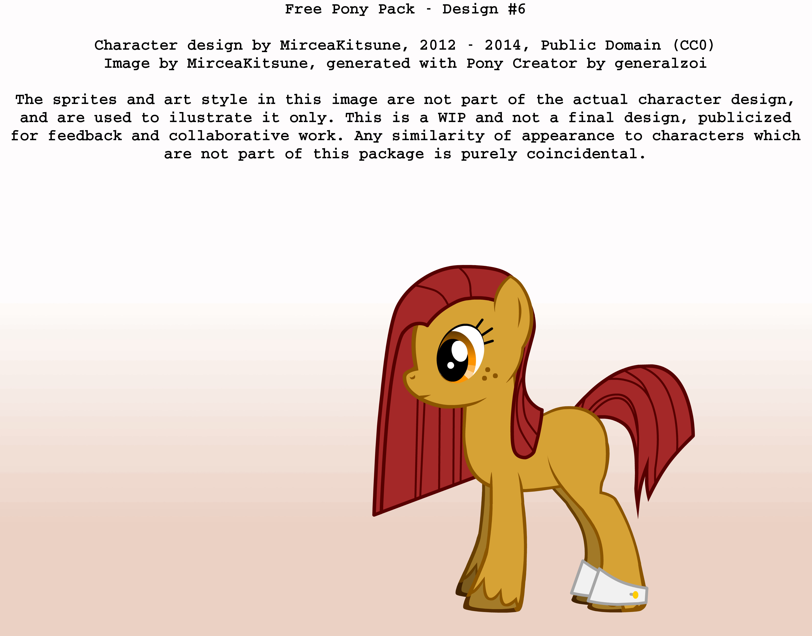

Since late 2012, I've been planning to create an original character set meant to be released under an open license (Public Domain) and composed of freely licensed IP exclusively. Its purpose is to allow the brony community to create its own pony series (comics, cartoons, etc) in a copyright free environment, with content not endorsed by Hasbro under any form. Copyright concerns weren't the only reason: I also wanted a character set intended to "live" through and for pony fans, not created out of obligation or for the profit of one man or institute.
As an analogy, think of it as the day Linus Torvalds saw Windows and probably thought to himself: "What if we could have a free operating system as good as this, that could appeal to the same users and offer them a free alternative, but without being a shameless ripoff of Windows". In a sense this is how I feel for the brony community: From the fandom of an appealing TV show, pony fans have evolved into an actual subculture. There's original pony music of commercial grade, breath taking art on Deviantart, and much more... which I believe makes bronies the lovely community they are. Yet we're stuck to only the commercial series that started it all, and sit helplessly under the copyright of one corporation. All fan art is subject to Cease & Desist orders if it's not to Hasbro's liking, which has already happened numerous times. And of course, we already know MLP-FiM and what it can offer... so why not give bronies a whole different world alongside that? Lastly, one should consider that MLP-FiM will not last forever, but the brony community could go on even after the day Hasbro discontinues its series.
What I see as creating a series different yet related to MLP: Have no references to any of its characters or stories, except for parody purposes at most. Use different ideas and a different setup to the best extent possible, including different terms and names. Support different artistic styles, and attempt to design a new basic anatomy for ponies. In a nutshell, this package is NOT fan art of My Little Pony and has nothing to do with the cartoon, except having been inspired by some of its elements. At the same time however, it will aim for a similar atmosphere and general style, and try to offer the things people would want most from a pony series. Ponies are to retain a similar cartoony design (small bodies, large limbs and heads, large eyes), be part of different races such earth / pegasus / unicorn / alicorn, and other things which weren't invented by Hasbro exclusively. For example, unicorns and winged horses are mythological creatures that existed long before MLP, but cutie marks are a concept invented by Hasbro and don't belong here.
By now you might be thinking: "Why not let each artist use their own ponies, why make free characters and encourage everyone to use those"? Artists can of course do this already, and many use their own characters and designs (OC). But think of it like this: When an artist draws characters created for personal use, the best that will happen is you and a small group become fans of that artist. You can only watch what said artist posts on his art page, using ideas which are his alone and for no one else to touch. Now if there's a fixed theme and character set that dozens of artists can spread, a common element is formed, which people can gravitate around and expand upon. Characters and ideas become popular, people get attached to them and can share that experience, etc. If MLP-FiM achieved such momentum thanks to the internet making it popular, I'm hoping this package can do the same using its free nature in addition. Especially since MLP was intended for little girls, whereas this is intended directly for bronies.
Okay, that's nice and all... but why should the brony fandom use a set of characters created by me? Although I'm maintaining the official repository and created the initial designs, I don't plan to simply put my characters in a frame and say "this is what I made for you". I aim to take suggestions from all bronies interested, and do changes based on the wishes of the fanbase. Of course I won't blindly add any request to the official package... but rest assured, this project will be developed together with the community, and the final designs will contain other people's ideas. Lastly, those characters do not have an owner and are not mine... they are no one's and everyone's. I have of course initiated them and would appreciate being credited for that now and then, but that's as far as it goes.
So... what will this character set be used for? That will be everyone's choice entirely! There won't be any official show or comic, nor instructions on what to create. The repository is a database (media and descriptions) that any artist can create their own projects with. Given its free nature, people can also fork it and make their own versions, doing changes to the characters as they see fit. This is a concept which hasn't been attempted before to my knowledge, and I'm hoping it might also roll the boulder for a new way of creating stories and shows. By using freely licensed references designed together with the community you aim toward... instead of a studio coming up with a design, putting a "copyright" seal on it, then showing us what they alone create with it on TV.
At this stage there are several problems left to tackle. This is my TODO list for the project basics:
This is a list of the exact specifications that weren't done yet or need to be improved:
If you wish to add your own part to this project, the best way is to use the GitHub page (more on that below). If you're interested in helping, it's highly recommended that you learn GIT and get a GitHub account so you can use its features. GIT isn't difficult to understand, while GitHub is a really awesome place for developing open-source projects. If you don't have a GitHub account and don't wish to get one, I can also be contacted via email.
Now a bit onto what the package will actually be like: So far there's a group of only 6 ponies with different personalities, similar to FiM's Mane 6. There were plans for 7 but I couldn't make the last different and appealing enough. There might be princesses or additional characters, though there are no plans for that yet. Races are still based on the concept of earth ponies, unicorns, pegasus and alicorns... but with more variations to each type. However there will not be any cutie marks, which is a MLP specific concept. I thought about neck symbols which would represent traits in a different manner, but that's not a priority.
The general environment ponies are designed for is not a blind sunshiny world, but a more realistic fantasy world if you will. I was never into the "little girl's show" part of MLP, but always imagined ponies in a slightly darker and grander setup. Think something like Lord Of The Rings or Samurai Jack, though with a little more "magic and rainbows" in the mix. In terms of artistic design, I still see them in a colorful and vivid environment.
Ponies aren't meant to represent elements or skills, and my idea is to have each pony laced to a weakness (more precisely a sensitivity or trauma) which they will be skilled and compelled at healing others of. I also want the actual species to be different from both MLP-FiM as well as real life equines, in all ways that make sense. For example, it might be logical to make them carnivores, given their advanced intelligence and strength. I considered dropping the word "pony" altogether, and using an original name for the species... but this isn't decided upon as it again depends on what other bronies would want.
Below is the character list, containing an illustration and description per pony. It's subject to change as ideas and suggestions come and go, so nothing here is final.
|  |
Description: #1 is an alicorn, but also part demon. Her body is of a dark blue color, while the tail and mane are of a deep dark blue, her eyes of purple color. Her tail and mane are long yet soft and tidy. Due to her demonic nature, she has a pair of two small horns apart from her slightly bent unicorn horn. She wears a short black cape similar to those seen on vampires. Personality: She may seem dark and cold to those who aren't as close to her, and probably acts a bit too wise sometimes, rarely opening up entirely. She is however loyal and very caring to those close to her, sometimes acting as a protector warrior. On the dark side, she's capable of exerting revenge if someone or something she cares for is threatened or hurt. She seeks to fix what's broken in the world, fight evil, and defeat those who wrong others. She's smart and a good learner, often being the one who plans things and leads the group. She's a pretty powerful being, primarily in her magic. Skills: One of her skills is being able to fight well... with swords or other short ranged weapons she wields by magic, or just magic attacks when no weapons are available. She's also able to make sense of things and solve mysteries quickly. Good with defending those she cares for. When from the heart, her magic can even fight death. |
|  |
Description: #2 is an unicorn. Her body is of a pure white color, while her mane and tail are bright pink with black, her eyes orange. Her mane and tail are rather short but mildly styled in a modern way. She only tends to wear jewelery, usually two bracelets on her hind hooves. Personality: Although she sees herself as a classy lady and often envisions herself a princess, she's not as panicky or afraid of things outside of her comfort zone as one would expect, nor is she one who tends to complain. She is the most social of the six, generally flirty with others, and sure of herself in everything she does. Perfectionist and enjoys everything being clean and in order. Skills: Her primary skills are calm and smart thinking. Good at sneaking and deceiving others, as well as skilled at seeing through lies. She's also good at helping others relax and find joys and pleasures in everyday things. |
|  |
Description: #3 is a pegasus. Her body color is lime, while her mane and tail are of bright blue and yellow, her eyes pink. Her tail and mane are styled in a nice spiral form. She only wears a pink ribbon in her mane. Personality: She tends to be rather crazy and strange in what she does, arguably a little psycho but in a harmless way. If she's set on doing something funny, she succeeds at it most of the time... especially if it's being a gentle troll to some. She's usually hyper, quick and always very expressive... though her actions aren't really illogical, stupid or annoying. She is however the one you should be most scared to upset, and who you don't generally know what to expect from... even in a good sense. Skills: Her primary skill is messing with thoughts. She can be considered a hypnosis, or (Celestia forbid) a drug pony in that sense. She's able to use this skill to stun people or give them specific states of mind, but sometimes to even calm those who are in pain. |
|  |
Description: #4 is an earth pony. Her primary color is bright pink, with a bit of black on her mane and tail, as well as red eyes. Her mane and tail are short and punk styled, somewhat resembling the form of a flame. In regard to clothing, she only wears a pair of black bands on her front and back hooves. She also has a black spotted area covering her flank for reasons unknown to anybody. Personality: She is a good runner as well as a good physical fighter. She's rather social, and enjoys parties or any gatherings as long as they're noisy enough or something dangerous goes on there. She tends to be caring in a "big sister" way to those weaker than herself. Although she isn't a cruel pony per say, she's often driven to kick and destroy stuff, and likely to get into a fight if someone gives her a reason. Also, if a thing such as good racing cars exists on her world, she'll be the first to be into it. Skills: She is able to run / jump / parkour with an impressive skill, and is certainly the hardest to chase down or stop with a wall. She is however also able to bring total destruction if she wills to... granted she won't really rampage without a good reason. There's probably little she can't demolish, and she can lift heavier objects than most ponies too. |
|  |
Description: #5 is a flutter pony... or a pegasus but with butterfly / fairy wings instead of feathered / angelic ones. Her body and tail / mane color is a vivid honey yellow, while her eyes are light blue. She has a soft and dense mane and tail, styled into a natural and modest form. She doesn't wear any accessories. Personality: She tends to be rather shy and withdrawn, until she gets to know someone well enough. She's much wiser and more aware when it comes to things of the heart, and can see and understand things other ponies might not. Although she isn't very social, the thing she hates most is being alone. She tends to treat those close to her unusually motherly. Skills: Her greatest skill is that of a healer... caring for those with a broken mind and soul, able to fix more than one would imagine. She's also someone very good to ask advice from, as she's also good at helping people off a wrong path. |
|  |
Description: #6 is an earth pony. Her body color is a dark brown, while her mane and tail are dark red, her eyes of a similar orange color. Her mane and tail are short and pretty sloppy. She also has a few wrinkles on her face. Her occasional accessory are two rags she wears on her back hooves. Personality: She tends to be a rather careless and withdrawn pony, usually doing things by herself but still a good friend. She isn't necessarily evil, despite tending to be power hungry. She's more of a city pony, but whom you often tend to find in the slums. She prefers getting involved in anything more or less OK that she can get something out of... up to a certain point that is. Skills: Her biggest skills is mechanics and (depending on theme) electronics, as well as being able to solve almost anything that's broken. In a darker scenario, one could imagine her as the perfect silent assassin with a sniper... granted she isn't necessarily that evil to do such a thing. |